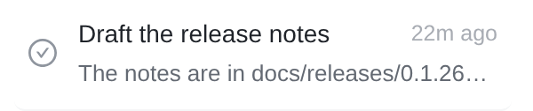
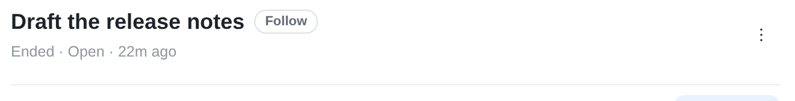
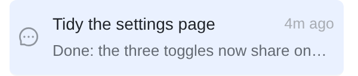

今天搬完后，在新 Workspace 里打开它
列表行

会话页头

对话底部

- 列表行是灰色对勾圈（Ended），和“被 End 释放”的会话一样。
- 页头写 Ended · Open。
- 底部写 Session ended. Send a message to resume this session.
建议 A和没搬过的空闲会话完全一样
列表行

会话页头

对话底部
没有提示，输入框照常可用
- 列表行、页头、底部都按“空闲、在等你回复”画：Waiting for your reply，不出现 Ended。
- 下一条消息照常发出；服务端在背后恢复会话，和今天发给已释放会话一样，用户看不到区别。
- 只对“因搬家而释放”的会话这样画。用户自己按 End 的会话照旧显示 Ended 和底部提示。
B只去掉底部提示
列表行
会话页头
对话底部
没有提示
- 改动最小，但列表和页头还写着 Ended，等于告诉用户会话被结束了。不推荐。